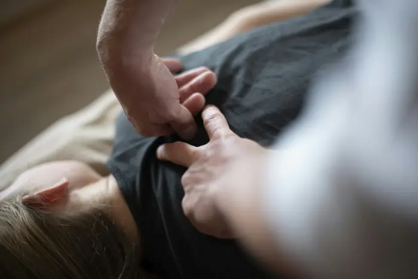
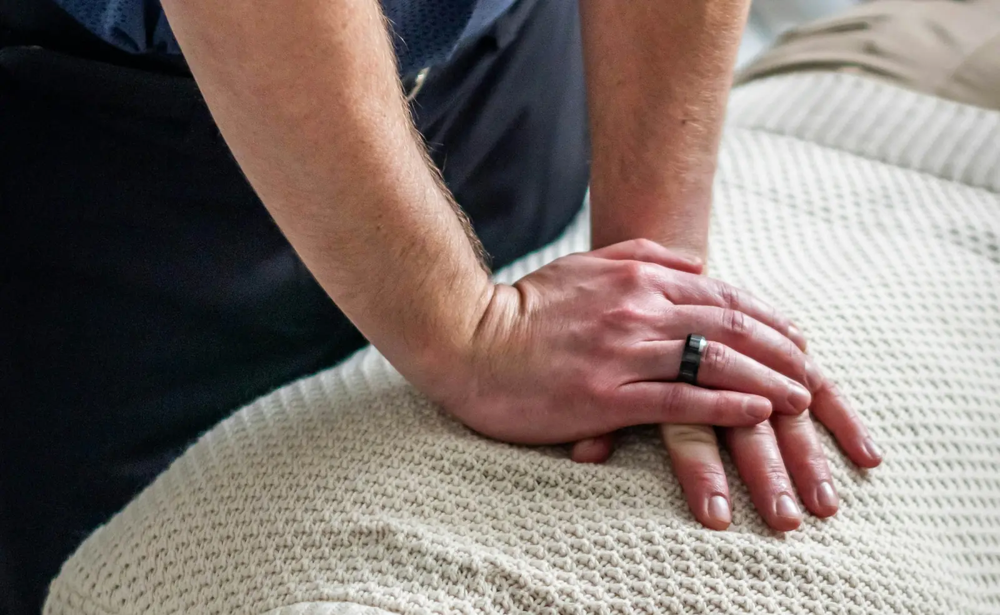
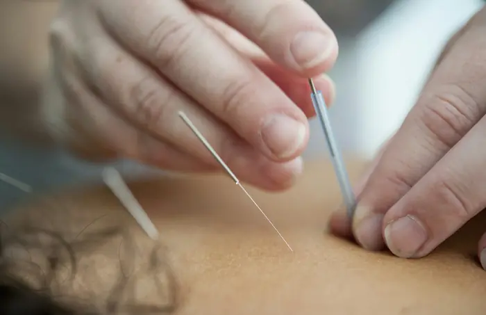
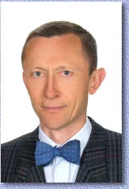
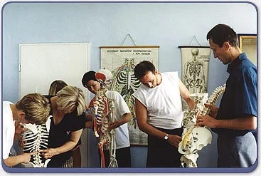

Chiropraktyka
Delikatne manipulacje dłońmi na kręgosłupie, miednicy i stawach metodą McTimoney-Corley'a: łagodną, bezpieczną i obejmującą całe ciało.

Przysiek koło Torunia
Bóle kręgosłupa, krzyża, głowy i stawów leczę delikatną terapią manualną i tradycyjną akupunkturą. Obie metody poznawałem przez 14 lat w Wielkiej Brytanii.
Umów wizytę: 56 678 93 43dr n. med. Henryk Dyczek, Fellow of the British Acupuncture Council
Akupunktura pobudza naturalne możliwości organizmu do powrotu do zdrowia. Chiropraktyka przywraca ruchomość kręgosłupa i stawów delikatną pracą dłoni. Najczęściej pacjenci zgłaszają się z takimi dolegliwościami:
Nie trzeba czekać, aż ból minie sam. Wystarczy zadzwonić: 56 678 93 43
Każdy pacjent jest inny: choroby mają podobne objawy, ale osoby, które na nie chorują, są różne. Dlatego metody łączę i dobieram do konkretnej osoby.

Delikatne manipulacje dłońmi na kręgosłupie, miednicy i stawach metodą McTimoney-Corley'a: łagodną, bezpieczną i obejmującą całe ciało.

Tradycyjna akupunktura chińska, uzupełniana w razie potrzeby ziołami chińskimi i zaleceniami dotyczącymi diety.
Impulsator daje ledwo wyczuwalny impuls na staw. Sprawdza się tam, gdzie klasyczna terapia manualna byłaby zbyt mocna, np. przy osteoporozie.

dr n. med. Henryk DyczekDyplomowany akupunkturzysta i chiropraktyk. Członek Polskiego Towarzystwa Medycyny Manualnej i British Acupuncture Council.
Pracując z pacjentami zauważyłem, że wielką pomocą byłaby umiejętność terapii manualnej. Tak do akupunktury doszła chiropraktyka.
Od 1999 roku kształcę następców: lekarzy i fizjoterapeutów. Zajęcia odbywają się w Szkole Chiropraktyki w Toruniu, po polsku i po angielsku. Uczymy metody McTimoney-Corley'a oraz terapii czaszkowo-krzyżowej.
Instytut Medycyny Orientalnej zbiera teksty źródłowe i publikacje o medycynie Dalekiego Wschodu.
Aktualne kursy: akademiachiropraktyki.pl
Zamówienia mailowo, wysyłka Pocztą Polską.
Telefon56 678 93 43
E-mailhenryk@dyczek.pl
Adres gabinetuul. Tulipanowa 6, Przysiek
87-134 Zławieś Wielka